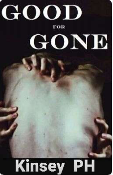

existencia.
En una noche fría de abril, decidí terminar con
Muchos iban a juzgarme por lo que iba a hacer, pero no podrían
entender lo que yo había pasado. La vida ya no tenía sentido para mí no tenía motivo o razón para seguir adelante. Sí, me llamaran cobarde, estaba eligiendo el camino más fácil. Había tomado la decisión el díaque me desperté sabiendo que mi familia se había ido. Sin embargo, había intentado durante tres semanas encontrar una razón para,continuar, y lamentablemente, nada había funcionado.
¿Cómo podía vivir? Cuando sabía que mi familia había sido asesinada a sangre fría, y aunque no pudiera recordar esa noche trágica, cada vez que cerraba los ojos todo lo que veía era sangre, cada vez que veía una pareja recordaba a mis padres.
Cada vez que escuchaba una risa,infantil, recordaba a mi hermana pequeña. Ah... y las pesadillas... eran uniica opción.
horribles. Nadie podía culparme por rendirme. Era mi
Mi desesperada decisión.
Me subí en la barandilla temblorosamente y miré hacia abajo. La sensación del vacío frente a mí me hizo morderme los labios
nerviosamente.
Es tan alto..
Por un momento sentí miedo, pero esa sensación fue reemplazada por
el alivio de que ya todo fuera acabar. El mundo se había vuelto
asfixiante para mí, tan sin sentido, mis ojos llenos de lágrimas miraron al cielo, Me gustaba pensar que mi familia estaba allá arriba, y que estaban esperando por mí, ese era mi único consuelo.
—Lo siento, mamá y papá —mi voz falló-—. Lo intenté, de verdad lo intenté —dije al aire.
Lágrimas rodaron por mis mejillas. Sólo tenía que dejarme caer y todo habría terminado. Tomé una respiración profunda y cerré los ojos.
—Salta —dejé de respirar cuando oí una voz masculina a mi lado—.
¿Qué estás esperando? —Abrí los ojos y giré la cabeza hacia un lado para buscar a la fuente de esa voz.
Había un chico con una sudadera negra apoyado en la barandilla. No
podía ver su rostro porque tenía la capucha de su sudadera sobre su cabeza, pero noté un cigarrillo en su mano derecha y vi como se lo llevaba a la boca y le daba una calada.
—Nadie va a venir a detenerte si eso es lo que estás esperando —Su voz sonaba tan fría y calculadora que me pregunté si era humano. Él exhaló el humo dejándome ver sus labios por un segundo, pero inmediatamente su rostro volvió a las sombras de la capucha.
¿Y quién eres tú?
El sol reinaba dominante en el cielo.
Observé como una suave brisa rozaba las ramas de un alto árbol, sus
hojas caían y luego volaban con el viento, deseé ser como esas hojas. A
pesar de que había una ventana que me separaba del exterior, casi
podía oler la naturaleza y sentir el viento sobre mi piel. Suspiré,
descansando la barbilla en mis dos manos mientras seguía mirando por
la ventana.
Señorita Dupont.
La mención de mi apellido me llamó la atención y en ese momento me
di cuenta de que la profesora Harris estaba de pie a mi lado, muy cerca
de misilla, con los brazos cruzados sobre el pecho. Una cola alta
perfecta sostenía su cabello castaño; ella era una mujer muy elegante.
Sus ojos color avellana destilaban molestia, no lucia contenta. Ella
levantó una de sus cejas y preguntó:
—¿Le parece que ese árbol es más interesante que mi clase? —En
realidad sí, pero nunca lo diría en voz alta, no quería problemas.
—Pido disculpas, señora Harris. No fue mi intención irrespetarla de
ninguna manera —contesté educadamente.
La señora Harris regresó a su escritorio, murmurando algo de mala
gana. A simple vista, este lugar se veía como un internado común y
corriente pero no lo era. El instituto Marshall era un psiquiátrico
experimental que tenía en su mayoría pacientes jóvenes que sufrían
algún tipo de trastorno, los pisos estaban categorizados por niveles
desde trastorno ligeros, medios hasta severos.
Los pacientes del primer piso podían a asistir a unas cuantas clases
regulares y generales en un intento de evitar que nos atrasáramos
académicamente y de brindarnos la idea de que éramos normales.
También nos daba algo que hacer, algo en que entretenernos en este
solitario y aislado lugar. Yo ni siquiera sabía que existían lugares así
hasta que mis abuelos me lo propusieron hace tres semanas.
¿Por qué? Porque mis padres ya no están, ellos y mi hermana menor
fueron asesinados a sangre fría hace dos meses. No podía recordar esa
terrible noche, todo era borroso y confuso cuando trataba de recordar.
El asesino me drogó, volviéndome una testigo inútil sin recuerdos. No
recordar no lo hacia menos doloroso o más fácil de superar. /
Una semana después de aquella terrible noche, mis abuelos decidieron
enviarme aquí. Creo que no estaban preparados para lidiar conmigo,
una joven adulta de 18 años diagnosticada con trastorno por estrés
postraumático, depresión clínica con ataques de pánico y con
tendencias suicidas, temían por mi vida. Además, estaba segura de que
les recordaba a mis padres, comprendía su dolor.
—Flor —susurró una voz suave detrás de mí. Giré la mitad de mi cuerpo hacia ella.
—Te dije que mi nombre es'Fleur' no Flor —le dije a Dana, la única amiga que había hecho hasta ahora. |
—Pero Fleur significa Flor en español, ¿verdad? —Pronunció Fleur mal. |
Sí, pero... —suspiré—. Olvídalo, ¿qué quieres?
—Necesito tu ayuda...—se pasó los dedos por su pelo rojizo—. Con mi
francés. Tengo una evaluación mañana —Ella puso una expresión triste,
parpadeando, tratando de convencerme.
Dana no me había dicho las razones por las que estaba aquí, no era
necesario. Yo había notado su delgada figura y a los guardias en la
puerta del baño entrar cuando ella entraba para vigilarla. Aun recordaba
como mi corazón se había hundido cuando descubrí que ella sufría de
un trastorno alimenticio. Ella estaba en un régimen estricto de
alimentación, medicación y psicoterapia. El día que llegué, ella acababa
de ser transferida del segundo piso al primero, al parecer estaba
mejorando y eso era un comienzo.
—¿Cómo sabes que hablo francés? —pregunté, curiosa.
El francés era mi
lengua madre; nací en una provincia tranquila en el norte de Francia. Mi
familia y yo habíamos vivido allí hasta que mi padre hizo algunos
enemigos por su trabajo. Él era abogado y había enviado a algunos
delincuentes a la cárcel, que luego decidieron vengarse y comenzar a
amenazarlo.
Así que, mi padre decidió que era mejor que nos mudáramos y nos
vinimos a Canadá, donde viven mis abuelos. Papá compró una cabaña
hermosa en las montañas, pero unos meses más tarde, un asesino se
metió y mató a todos menos a mí. La policía descartó que fuera un
mercenario, dijeron que se trataba de un asesino en serie que ya había
matado a 4 familias antes de la mía y que estaban luchando por
encontrarlo, no sabían porque nos había escogido, aún no habían
descifrado su patrón. Dijeron que yo tenía suerte de sobrevivir, pero lo
menos que me sentía era afortunada.
— ¿Flor? —La voz de Dana me sacó de mis pensamientos.
—Lo siento, eh... de nuevo, ¿cómo sabes que hablo francés?
—Bueno, tu nombre es francés y tu acento, creo que es bastante obvio.
—Bien, voy a ver qué puedo hacer. Nos vemos después de la clase —
fingí una sonrisa, había olvidado por completo cómo se sentía sonreír
de verdad.
Señorita Dupont —llamó la señora Harris llamó. Inmediatamente, la
miré—. ¿Puede decirme cual es la tercera etapa del duelo?
—Fase de Negociación —respondí rápidamente. Sabía que ella se había
dado cuenta de que no estaba prestando atención y por eso me preguntó.
Bueno, eso es todo por hoy. Tengan un gran día, pueden salir —
todo el mundo en el aula comenzó a recoger sus cosas—. Señorita
Dupont, acérquese un momento —me sorprendió su petición, así que
me limité a asentir, caminando a su escritorio.
— ¿Pasa algo, señora Harris?
—No, me han informado que no fi
tampoco a la terapia grupal.
te a tu cita con el psicólogo ayer ni
Oh... eso.
—Con el debido respeto, señora Harris, no creo que lo necesite.